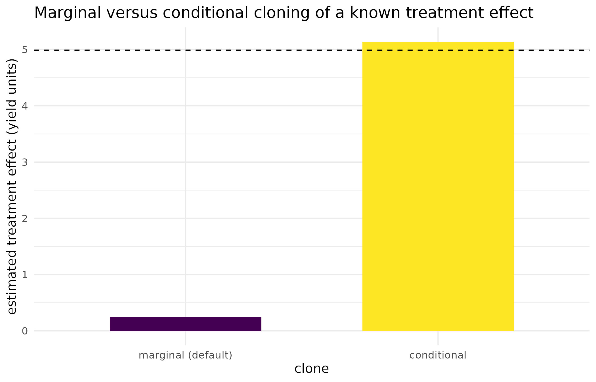

Why
A custodian is about to hand a synthetic table to a collaborator and asks the question anyone in that position should ask before clicking send: exactly what does this protect, what does it not, and what happens if I get a column’s sensitivity wrong? This vignette answers all three, on worked examples that trip the package’s own safeguards for real rather than only describing them.
masque is not a privacy-preserving or
differential-privacy tool. It is a structurally faithful development
surrogate. Read this vignette before sharing any masque
output beyond your own machine.
What
The recipe returned by mask() is at least as sensitive
as the original data. The whole design assumes that only the
synthetic crosses the trust boundary and the recipe stays with
the custodian:
| Actor holds | Wants to learn | What masque protects |
|---|---|---|
| Synthetic only | Original raw values | Aliased treatment and categorical vocabularies, jittered numerics, dropped ids and free text, and optionally the column names |
| Synthetic + recipe | Original raw values | Nothing – the combination is as sensitive as the original |
| Recipe only | Original raw values | Nothing useful – the recipe is meaningless without the synthetic |
| Synthetic + external side information | Identity of treatments / sites | The label vocabulary and the order it was in. A preserved design
footprint or a keep column is recognisable, level
frequencies are unchanged, and side information wins |
What masque does: it preserves enough structure for
pipelines to run unchanged, exposes the privacy-versus-fidelity
trade-off through two explicit modes, records every translation in a
private recipe that round-trips, and audits its own output before it is
shared.
What masque does not do: it gives no
differential-privacy guarantee, it does not make output safe for public
release, it does not hide rare strata, small designs, or operational
metadata such as small site-by-year combinations or contact names, and
it does not rewrite pipeline source code.
Since version 0.6.0, every column carries a role (what
it is) and an action (how deeply it is masked, from
role_options()’s validated grid: keep,
scramble, alias, drop).
mask()’s mode argument chooses sensible
defaults for both, so the common case is safe without per-column
work:
| Knob | mode = "local" |
mode = "collaborate" |
|---|---|---|
| Treatment labels | kept | aliased (trt_001) |
| Categorical covariate labels | kept | aliased (<col>_L001) |
| Date / time columns | row-permuted with class preserved | row-permuted with class preserved |
Identifiers (id) |
kept | dropped |
Free text (text) |
kept | dropped |
| Numeric synthesis | empirical-quantile (may emit observed values) | empirical-quantile plus within-resolution jitter, with integers stochastically rounded |
| NA mask | preserved cell-by-cell | preserved cell-by-cell |
audit_mask() |
on demand | automatic at mask() time |
print(recipe) |
redacted | redacted, with explicit reveal_maps() to inspect |
Do
Depth controls: hiding design structure
Design columns are byte-identical by default, which preserves the
experimental layout exactly – and a publicly registered trial layout is
a fingerprint. To keep the structure but hide the site or block
labels, set a design column’s action to alias:
df <- data.frame(
site = factor(rep(c("Roseworthy", "Minnipa", "Turretfield"), each = 6L)),
rep = rep(seq_len(3L), 6L),
yield = rnorm(18L)
)
roles <- propose_roles(df, detect = FALSE)
roles <- set_role(roles, "site", role = "design", action = "alias")
s <- synthetic(mask(df, roles, mode = "collaborate", seed = 1L))
site_names_gone <- !any(as.character(s$site) %in% as.character(df$site))
site_names_gone
#> [1] TRUE
knitr::kable(
as.data.frame(table(s$site), stringsAsFactors = FALSE),
col.names = c("aliased site", "plots"),
caption = "The three-site structure survives even though the labels do not."
)| aliased site | plots |
|---|---|
| site_D001 | 6 |
| site_D002 | 6 |
| site_D003 | 6 |
This knowingly breaks byte-identity, so it is never a default – it
has to be asked for explicitly. Names can be hidden the same way:
mask(..., alias_names = TRUE) replaces every retained
column name with an opaque code that the recipe inverts on the
round-trip, and a character vector hides only the names given.
What an alias does and does not hide. The alias
vocabulary is fixed and sorted (trt_001,
trt_002, …), but which level receives which alias is drawn
from a random permutation, so for a six-level column there are 720
equally likely maps. This matters because the vocabularies in field
research are routinely public: a variety roster, an N-rate ladder, a
site list. Under an order-preserving map, sorting a candidate list would
reconstruct the whole assignment from the synthetic alone; it no longer
does, and the same draw governs the join keys mask_set()
shares across tables.
Two limits go with that, and they are the custodian’s to manage:
-
The seed is confidential material. The permutation
comes from the seeded stream, so
mask(seed = 1L)reproduces the same map, exactly as it reproduces the same synthetic values. Publishing the seed beside the synthetic re-opens the inversion for anyone who can also reproduce the draw. Keep the seed with the recipe, or passseed = NULLwhere reproducibility is not required and take a fresh map each call. -
Frequencies are not hidden. Aliasing is a bijection
on labels: the count of each level is unchanged by design, because the
design footprint is what makes the clone useful. A vocabulary whose
level counts are known and distinct is still matchable one level at a
time.
audit_mask()reports those counts so the exposure is visible rather than implicit.
An alias therefore raises the cost of re-identification; it is not a cryptographic commitment, and none of it is a differential-privacy guarantee.
The conditional clone: preserving the treatment effect
The default numeric synthesis re-simulates every scrambled numeric column from a single global Gaussian copula. That preserves each column’s marginal distribution and the global covariance, which is enough to develop most pipelines – but it severs the relationship between treatment and outcome. The synthetic outcomes are drawn from the pooled distribution and the treatment labels are relabelled independently, so a causal model fitted on the clone sees no association between an arm and its response. A pipeline whose whole purpose is to estimate a treatment effect would silently give the wrong answer on such a clone.
mask()’s conditional = TRUE argument fixes
this. It fits and samples the copula within each treatment-by-design
stratum rather than pooling, so a row’s synthetic outcome inherits
the location of the treatment that row carries. The treatment-to-outcome
map – the quantity a causal model reads – survives the clone, within
sampling tolerance. This is the data-side analogue of preserving a
conditional mean embedding rather than a pooled marginal.
The contrast is easiest to see on a two-arm trial with a known effect:
set.seed(42)
n <- 600L
arm <- factor(rep(c("ctrl", "treat"), each = n / 2L))
# A real +5-unit effect of the treated arm on yield.
yield <- 10 + 5 * (arm == "treat") + rnorm(n, sd = 2)
trial <- data.frame(genotype = arm, yield = yield)
roles <- propose_roles(trial, detect = FALSE)
roles <- set_role(roles, "genotype", role = "treatment", action = "scramble")
roles <- set_role(roles, "yield", role = "outcome")
true_effect <- coef(lm(yield ~ genotype, trial))[["genotypetreat"]]
true_effect
#> [1] 4.988538Cloning both ways from the same seed, then re-estimating the effect on each clone:
marg <- suppressWarnings(
mask(trial, roles, mode = "local", seed = 1L, conditional = FALSE)
)
cond <- suppressWarnings(
mask(trial, roles, mode = "local", seed = 1L, conditional = TRUE)
)
effect_of <- function(m) {
coef(lm(yield ~ genotype, synthetic(m)))[["genotypetreat"]]
}
effect_marg <- effect_of(marg)
effect_cond <- effect_of(cond)
knitr::kable(
data.frame(
clone = c("marginal (default)", "conditional"),
estimated_effect = c(effect_marg, effect_cond),
true_effect = true_effect
),
digits = 3,
caption = paste0(
"The treated-arm effect, re-estimated on each clone against the ",
"true effect fitted on the original trial."
)
)| clone | estimated_effect | true_effect |
|---|---|---|
| marginal (default) | 0.249 | 4.989 |
| conditional | 5.138 | 4.989 |
The marginal clone collapses the effect toward zero. The conditional clone recovers it. Both clones still match the pooled marginal of the outcome:
knitr::kable(
data.frame(
source = c("original", "marginal clone", "conditional clone"),
mean_yield = c(
mean(trial$yield), mean(synthetic(marg)$yield),
mean(synthetic(cond)$yield)
),
sd_yield = c(
sd(trial$yield), sd(synthetic(marg)$yield),
sd(synthetic(cond)$yield)
)
),
digits = 3,
caption = paste0(
"Both clones preserve the pooled mean and SD of yield; only the ",
"conditional clone preserves the arm-to-arm difference."
)
)| source | mean_yield | sd_yield |
|---|---|---|
| original | 12.451 | 3.183 |
| marginal clone | 12.496 | 3.083 |
| conditional clone | 12.497 | 3.199 |
Figure: what the table above cannot show
The table reports two point estimates against one reference line in text. The figure below draws the same three numbers as bars against a reference line, which makes the direction and near-total size of the marginal clone’s collapse visible at a glance in a way that reading two rows of a table does not.
effect_df <- data.frame(
clone = factor(
c("marginal (default)", "conditional"),
levels = c("marginal (default)", "conditional")
),
estimated_effect = c(effect_marg, effect_cond)
)
ggplot2::ggplot(
effect_df, ggplot2::aes(x = clone, y = estimated_effect, fill = clone)
) +
ggplot2::geom_col(width = 0.6) +
ggplot2::geom_hline(yintercept = true_effect, linetype = "dashed") +
ggplot2::scale_fill_viridis_d(guide = "none") +
ggplot2::labs(
x = "clone", y = "estimated treatment effect (yield units)",
title = "Marginal versus conditional cloning of a known treatment effect"
) +
ggplot2::theme_minimal()
Estimated treatment effect (kg/ha equivalent yield units) on the marginal versus conditional clone, against the true effect fitted on the original trial (dashed line). The marginal clone collapses the effect toward zero; the conditional clone recovers it.
The conditioning columns – the treatment plus any retained design columns – are recorded on the recipe, so the choice is auditable:
recipe(cond)@conditional
#> [1] TRUE
recipe(cond)@conditioning_cols
#> [1] "genotype"
recipe(cond)@conditioning_used
#> [1] "genotype"
recipe(cond)@fallback_frac
#> [1] 0conditioning_cols is what the call asked for;
conditioning_used is the stratum the clone actually got,
and fallback_frac is the share of rows that did not get a
stratum at all. They differ because a conditional clone needs enough
rows per stratum to fit a stratum-local copula, and the finest stratum
available is rarely the one that has them. Treatment crossed with every
retained design column on a replicated factorial – six N rates by three
varieties by four replicates – is seventy-two cells of one row. Rather
than pool that wholesale, mask() walks a coarsening
ladder: it drops design columns, the finest first, until the
cells hold at least five rows. Treatment columns are never dropped,
because the assignment is the thing the conditional clone exists to
preserve. Whatever is still too thin at the bottom rung is pooled into a
global fallback, as before.
Any coarsening, and any residual pooling, raises a classed
masque_conditional_degraded warning naming the columns
given up and the pooled share, and both facts are written onto the
recipe. A pipeline can catch the class if it should stop when its clone
is less conditional than it asked for:
withCallingHandlers(
mask(trial, roles, seed = 1L, conditional = TRUE),
masque_conditional_degraded = function(w) stop(conditionMessage(w))
)Conditional cloning composes with both modes and with
mask_set() (each table is stratified by its own treatment
and design columns). With no treatment or design column to condition on
at all, the path degrades to the global copula and raises the same
classed warning. It is worth reaching for whenever the development
pipeline estimates an effect, not just a distribution.
What the copula carries: monotone, not non-monotone, association
Numeric columns that are kept and re-simulated together share one Gaussian copula, fitted on the normal scores of their ranks. A Gaussian copula holds a single correlation per pair, so it reproduces a monotone association – linear, or any order-preserving curve – but not a dependence that a correlation cannot express. A non-monotone relationship, such as a U-shaped dependence of an outcome on a covariate, reads as near-zero rank correlation and is reproduced as near-independence.
set.seed(7)
n <- 2000L
x_lin <- rnorm(n)
y_lin <- 2 * x_lin + rnorm(n, sd = 0.5) # monotone (linear)
x_u <- runif(n, -3, 3)
y_u <- x_u^2 + rnorm(n, sd = 0.5) # non-monotone (U-shaped)
d <- data.frame(x_lin, y_lin, x_u, y_u)
s <- synthetic(mask(d, propose_roles(d, detect = FALSE), seed = 1L))
# R-squared of a quadratic fit captures association of any curvature.
fit_r2 <- function(x, y) summary(lm(y ~ poly(x, 2)))$r.squared
knitr::kable(
data.frame(
pair = c("monotone (y = 2x)", "non-monotone (y = x^2)"),
original = c(fit_r2(x_lin, y_lin), fit_r2(x_u, y_u)),
clone = c(fit_r2(s$x_lin, s$y_lin), fit_r2(s$x_u, s$y_u))
),
digits = 3,
caption = paste0(
"R-squared of a quadratic fit, original versus clone, for a ",
"monotone and a non-monotone pair."
)
)| pair | original | clone |
|---|---|---|
| monotone (y = 2x) | 0.942 | 0.941 |
| non-monotone (y = x^2) | 0.966 | 0.000 |
The monotone pair keeps its association almost exactly. The
non-monotone pair loses it entirely, so on the clone the covariate
carries no information about the outcome.
conditional = TRUE does not repair this: it preserves the
outcome’s location within each treatment-by-design stratum, not the
curvature of the outcome’s dependence on a continuous covariate. A
development pipeline whose modelling step is non-linear – a smoothing
spline, a generalised additive model, a tree, an interaction term – will
therefore see on the synthetic only the monotone part of any
relationship present in the original, and a good fit there is not
evidence the step behaves correctly on the real data. Validating such a
step means round-tripping it onto the original through the recipe, not
trusting its result on the clone.
The leakage audit, and a refusal for real
audit_mask() inspects the synthetic against the original
and grades the leakage of each column. In collaborate mode it runs
automatically and warns at mask() time. The fixture below
is built to trip it: a PII-suspected column the user retains against the
default, and a categorical covariate with a frequency-one level.
df <- data.frame(
rep = rep(seq_len(3L), each = 20L),
variety = factor(rep(paste0("V", seq_len(6L)), 10L)),
contact_email = factor(rep(c("a@x", "b@y"), 30L)),
rare_treatment = factor(c(
"only_one",
sample(c("alpha", "beta", "gamma"), 59L, replace = TRUE)
)),
yield = rnorm(60L, 5, 1),
stringsAsFactors = FALSE
)
roles <- propose_roles(df, mode = "collaborate")
knitr::kable(
roles[, c("col", "role", "action", "pii_suspected")],
caption = paste0(
"The proposed plan: `contact_email` is auto-flagged ",
"`pii_suspected` and dropped."
)
)| col | role | action | pii_suspected |
|---|---|---|---|
| rep | design | keep | FALSE |
| variety | treatment | alias | FALSE |
| contact_email | text | drop | TRUE |
| rare_treatment | treatment | alias | FALSE |
| yield | covariate | scramble | FALSE |
The custodian overrides the flag – pretending they insist on keeping
contact_email – and makes the rare column a covariate, then
masks:
roles <- set_role(roles, "yield", role = "outcome")
roles <- set_role(roles, "contact_email", role = "covariate", action = "keep")
roles <- set_role(roles, "rare_treatment", role = "covariate")
m <- mask(df, roles, mode = "collaborate", seed = 1L)
#> Warning: audit_mask() flagged HIGH leakage on column(s): contact_email, rare_treatment
knitr::kable(
audit_mask(m)[, c("col", "leakage_class", "notes")],
caption = paste0(
"The mask-time audit: `contact_email` and `rare_treatment` both ",
"flag HIGH."
)
)
#>
#> ── masque audit (mode = collaborate) ───────────────────────────────────────────────────────────────
#> • 2 HIGH, 0 medium, 3 low across 5 columns
#> • Rows with a globally unique NA pattern: 0.0%
#>
#> ── HIGH (2) ──
#>
#> ✖ covariate contact_email PII-pattern column name; kept as-is - visible to collaborators
#> ✖ covariate rare_treatment levels aliased; rare level (freq = 1)
#>
#> ── LOW (3) ──
#>
#> ℹ design rep exact-match 100.0%
#> ℹ treatment variety levels aliased
#> ℹ outcome yield ok| col | leakage_class | notes |
|---|---|---|
| rep | low | exact-match 100.0% |
| variety | low | levels aliased |
| contact_email | high | PII-pattern column name; kept as-is - visible to collaborators |
| rare_treatment | high | levels aliased; rare level (freq = 1) |
| yield | low | ok |
contact_email (real values kept across the trust
boundary) and rare_treatment (a frequency-one level) are
flagged. masque responds on two channels. At construction
time, mask() raised a classed
masque_high_leakage warning above and recorded the findings
in recipe@warnings – the guided masque() flow
never silences it. At write time, the package-managed writers refuse
outright while a HIGH finding stands, which the call below shows for
real rather than only describing:
out_dir <- tempfile()
masque(df, roles = roles, out = out_dir, mode = "collaborate", seed = 1L,
quiet = TRUE)
#> Warning: audit_mask() flagged HIGH leakage on column(s): contact_email, rare_treatment
#> Error in `.gate_release()`:
#> ! Write blocked: the audit flagged HIGH leakage on 2 columns.
#> ✖ Flagged: contact_email, rare_treatment.
#> ℹ Re-role, alias, or drop the flagged column(s), then mask again.
#> ℹ Or pass `allow_high = TRUE` to write anyway after your own review - the override is recorded.
dir.exists(out_dir)
#> [1] FALSENothing is written: the refusal fires before the writer touches disk,
the two flagged columns are named in the message, and the remedy is
spelled out (re-role, alias, or drop the column, then mask again). A
custodian who has reviewed the findings and still wants to proceed can
pass allow_high = TRUE; the override is itself raised as a
classed masque_high_override warning and recorded in the
recipe’s warnings, so the exception stays auditable rather than
silent.
Beyond that gate the release decision stays with the custodian –
whether a synthetic table is appropriate for a given collaborator,
environment, or jurisdiction depends on context the package cannot see.
masque informs that decision. It does not make it.
Multi-table sets
When several tables share a key, mask_set() aliases that
key identically across all of them so the synthetic tables
still join. A linked key is the join surface, aliased consistently
rather than permuted (permuting a key would break the join regardless of
masking).
set_dir <- system.file("extdata", "met_set", package = "masque")
ms <- mask_set(set_dir, mode = "collaborate", seed = 1L, quiet = TRUE)
#> Warning: Numeric environment column(s) year remain "keep" in collaborate mode.
#> ℹ This preserves environment structure but may disclose year or other numeric labels; review before
#> release.
ag <- synthetic(ms)$agronomy
qa <- synthetic(ms)$quality
join_survives <- setequal(unique(ag$gen), unique(qa$gen))
join_survives
#> [1] TRUEThe recipe bundle is private exactly as a single recipe is;
write_set() never writes it.
Geographic coordinates
Latitude and longitude are treated as sensitive:
propose_roles() flags a column whose name looks like a
coordinate (gps, lat/latitude,
lon/longitude) as pii_suspected
and proposes drop. Dropping is the safest choice when the
synthetic does not need locations.
A coordinate is masked unless told otherwise.
Dropping is one way to say what happens to it; there are three, and
mask() refuses to guess. If a column whose name says
coordinate would be written through with action = "keep",
the call stops. Declaring the pair to coords coarsens it,
giving the column drop or scramble masks it,
or passing allow_unmasked_coords = TRUE after deciding the
position is not sensitive – which is recorded on the recipe, so the
decision is visible later. A column that looks like a coordinate only by
the shape of its values raises a warning instead of stopping, because
that detection is a guess and a false positive should not block a
legitimate mask.
When the synthetic does need plausible coordinates – to exercise a
spatial pipeline, say – a plain scramble is the wrong tool: the copula
re-simulates each axis and smears a latitude/longitude pair into a
continuous cloud that can land in the sea. masque offers
two purpose-built alternatives.
jitter_coordinates() coarsens coordinates in place by a
geographic-masking jitter. The default donut scheme displaces every
point by a random distance drawn uniformly by area from an annulus, in a
random direction, and re-draws until the point falls on land, so a
coastal site is never pushed offshore. The longitude step is corrected
by cos(latitude) so the ground distance matches the
requested kilometres at any latitude, and the NA pattern and the
latitude/longitude pairing are preserved.
sites <- data.frame(
site = c("A", "B", "C"),
lat = c(-34.9, -35.2, -33.6),
lon = c(138.6, 142.0, 148.2)
)
knitr::kable(
jitter_coordinates(sites, "lat", "lon", min_km = 5, max_km = 20, seed = 1L),
digits = 4,
caption = paste0(
"Three sites, each displaced 5-20 km in a random direction and ",
"re-drawn until on land."
)
)| site | lat | lon |
|---|---|---|
| A | -34.8160 | 138.5333 |
| B | -35.1656 | 142.1346 |
| C | -33.4883 | 148.1005 |
A coordinate belongs to a site, not to a row. One displacement is drawn per site and broadcast to every row of that site, so a table holding many rows per physical place – plots within a trial, samples within a paddock – comes back with one masked coordinate per place, exactly as the source table has one true coordinate per place. By default a site is a set of rows sharing an identical input coordinate, which needs no user action and cannot alter genuinely point-level data. Where a site’s recorded coordinates differ slightly between rows, naming the site columns consolidates the group to its centroid.
plots <- data.frame(
trial = rep(c("T1", "T2"), each = 4L),
lat = rep(c(-34.9, -35.2), each = 4L),
lon = rep(c(138.6, 142.0), each = 4L)
)
masked <- jitter_coordinates(plots, "lat", "lon", by = "trial", seed = 1L)
one_coord_per_trial <- nrow(unique(masked[c("lat", "lon")]))
one_coord_per_trial
#> [1] 2Grouping is a confidentiality control, not only a fidelity one. Donut displacement is isotropic, so the mean of many independent draws around one true site converges on that site. Displacing a 360-row trial row by row leaves its centroid a median 0.58 km from the truth, against the 5 km floor the donut was asked for. One draw per site removes that estimator and leaves the full displacement in place. The unit has to be chosen carefully: it is the finest grouping denoting one physical place at one time, so for a multi-year trial series it is location by year rather than location alone, because trials at one named location in different seasons legitimately sit in different paddocks.
A site that cannot be placed on land within max_tries
re-draws is set to NA on both axes, with a warning.
masque does not emit a true coordinate inside a table the
caller believes is masked.
Declaring the pair to mask() applies the same coarsening
as part of masking, so the coordinates never pass through the
copula:
m <- mask(df, roles, mode = "collaborate",
coords = list(list(lat = "GPS_S", lon = "GPS_E", by = "TRIAL")),
seed = 1L)The recipe records the grouping each declared pair was masked under,
so a clone carries the account of its own coordinate structure. A
coordinate declared to coords is retained in the synthetic,
so audit_mask() reports it – retention is worth knowing
about, and it is reported as medium, noting that the column was
coarsened in place, rather than as the high-leakage passthrough it would
be had the real values been kept.
synthesise_geospatial() is the alternative when it is
preferable to re-anchor points around fake centroids supplied for each
region.
How far to displace. The right magnitude is not a constant. It is calibrated to the density of the entities being protected, so that the masked point is spatially k-anonymous – roughly, at least k comparable entities lie closer to the masked point than the true one (Hampton et al., 2010). Individual-level urban health data is typically masked with a standard deviation of about one kilometre, because cities are dense. Fields and farms are far sparser, so comparable protection needs a much larger displacement; a donut of roughly 5 to 20 km (the default) moves a point across several properties while keeping it in the same agroclimatic region (Zandbergen, 2014). A formal guarantee needs the radii calibrated to the local field density rather than the default.
Read
The design-alias demonstration keeps the three-site structure intact
– the table above still shows three groups of six plots – while the site
names themselves are gone (TRUE): structure survives, labels do not,
exactly what an alias action on a design column is for.
The conditional-clone contrast is the sharpest number in this vignette. The trial’s true treatment effect, fitted on the original data, is 4.99 yield units. The default marginal clone recovers only 0.25, because pooling the copula across arms erases the arm-to-arm difference it was never told to keep. The conditional clone recovers 5.14, inside sampling tolerance of the true effect, because stratifying the copula by treatment keeps each arm’s synthetic outcomes anchored to that arm’s real location. The figure shows the same result as two bars against the true-effect line: one bar sits near zero, the other sits on the line. Both clones still match the original’s pooled mean and SD of yield, so a pipeline that only checks marginal fidelity would not notice the marginal clone’s collapsed effect at all – checking the number a pipeline actually needs is what this section demonstrates.
The monotone-versus-non-monotone comparison shows the copula’s real
boundary: a linear relationship’s R-squared survives cloning almost
unchanged, while a U-shaped relationship’s R-squared drops to what a
straight correlation coefficient would already have predicted – near
zero. conditional = TRUE does not touch this limitation,
because it acts on strata of the outcome’s location, not on the shape of
a covariate relationship.
The leakage audit flags both planted problems – the retained PII
column and the frequency-one level – and the write call that followed
was refused outright: dir.exists(out_dir) above reads
FALSE, confirming the target directory was never created. That is the
fail-closed behaviour this vignette set out to show for real, not only
describe: a HIGH finding blocks a package-managed write unconditionally,
until the custodian either fixes the plan or explicitly overrides
it.
The multi-table join survives masking (TRUE): agronomy
and quality share exactly the same aliased genotype codes,
because mask_set() draws the shared key’s alias once and
applies it to every table that carries it.
Answering the opening question: a synthetic clone protects the
vocabulary and the raw values behind it, not the design footprint, the
level frequencies, or (without conditional = TRUE) a
treatment-to-outcome relationship a pipeline might be built to estimate.
Getting a column’s sensitivity wrong is caught by the audit before
anything is written, not after.
Limits
Everything demonstrated here is a development safeguard, not a
disclosure-control guarantee in the formal sense: the alias map raises
the cost of a public-vocabulary attack, but a bijection preserves level
frequencies by construction, and a determined attacker with strong side
information about frequencies and structure is not stopped by an alias
alone. The Gaussian copula’s monotone-only limitation is architectural,
not a bug to be tuned away, so a pipeline whose core modelling step is
non-linear should validate on the original data through the recipe
rather than trust its fit on the clone. The donut jitter’s k-anonymity
property is a rule of thumb tied to entity density, not a certified
guarantee, and the right radius for a given dataset needs to be chosen
with that density in mind rather than left at the package default. The
leakage audit reads what the mask-time comparison can see – flagged
names, frequency-one levels, retained coordinates – and cannot detect a
disclosure risk that depends on information outside the table itself,
such as an outside dataset a real attacker might already hold. None of
these limits are resolved by more careful use of masque;
they are the boundary of what a structurally faithful surrogate can
promise, distinct from the differential-privacy guarantees this package
deliberately does not claim.
What to read next
Getting started with masque covers the custodian’s side of a
first masking run: masque(), the roles-and-actions plan,
and the multi-environment detection this vignette assumes is already
understood. Recipe anatomy and the round-trip is the analyst’s
side: what the recipe stores and how a pipeline built on the synthetic
re-targets to the original.
Reproduce
set.seed(1) is set once for the whole document; the
conditional-clone fixture reseeds explicitly with
set.seed(42) and the copula-shape fixture with
set.seed(7), so both sections are self-contained regardless
of chunk execution order. Every
mask()/mask_set()/jitter_coordinates()
call also passes seed = 1L explicitly. Package versions
follow.
sessionInfo()
#> R version 4.6.1 (2026-06-24)
#> Platform: x86_64-pc-linux-gnu
#> Running under: Ubuntu 24.04.4 LTS
#>
#> Matrix products: default
#> BLAS: /usr/lib/x86_64-linux-gnu/openblas-pthread/libblas.so.3
#> LAPACK: /usr/lib/x86_64-linux-gnu/openblas-pthread/libopenblasp-r0.3.26.so; LAPACK version 3.12.0
#>
#> locale:
#> [1] LC_CTYPE=C.UTF-8 LC_NUMERIC=C LC_TIME=C.UTF-8 LC_COLLATE=C.UTF-8
#> [5] LC_MONETARY=C.UTF-8 LC_MESSAGES=C.UTF-8 LC_PAPER=C.UTF-8 LC_NAME=C
#> [9] LC_ADDRESS=C LC_TELEPHONE=C LC_MEASUREMENT=C.UTF-8 LC_IDENTIFICATION=C
#>
#> time zone: UTC
#> tzcode source: system (glibc)
#>
#> attached base packages:
#> [1] stats graphics grDevices utils datasets methods base
#>
#> other attached packages:
#> [1] masque_0.12.0
#>
#> loaded via a namespace (and not attached):
#> [1] vctrs_0.7.3 cli_3.6.6 knitr_1.51 rlang_1.3.0
#> [5] xfun_0.60 otel_0.2.0 textshaping_1.0.5 S7_0.2.2
#> [9] data.table_1.18.6.1 jsonlite_2.0.0 labeling_0.4.3 glue_1.8.1
#> [13] htmltools_0.5.9 ragg_1.5.2 sass_0.4.10 scales_1.4.0
#> [17] rmarkdown_2.32 grid_4.6.1 tibble_3.3.1 evaluate_1.0.5
#> [21] jquerylib_0.1.4 fastmap_1.2.0 yaml_2.3.12 lifecycle_1.0.5
#> [25] compiler_4.6.1 fs_2.1.0 RColorBrewer_1.1-3 pkgconfig_2.0.3
#> [29] maps_3.4.3 systemfonts_1.3.2 farver_2.1.2 digest_0.6.39
#> [33] viridisLite_0.4.3 R6_2.6.1 pillar_1.11.1 magrittr_2.0.5
#> [37] bslib_0.12.0 withr_3.0.3 tools_4.6.1 gtable_0.3.6
#> [41] pkgdown_2.2.1 ggplot2_4.0.3 cachem_1.1.0 desc_1.4.3References
Hampton, K. H., Fitch, M. K., Allshouse, W. B., Doherty, I. A., Gesink, D. C., Leone, P. A., Serre, M. L., & Miller, W. C. (2010). Mapping health data: improved privacy protection with donut method geomasking. American Journal of Epidemiology, 172(9), 1062-1069. https://doi.org/10.1093/aje/kwq248
Zandbergen, P. A. (2014). Ensuring confidentiality of geocoded health data: assessing geographic masking strategies for individual-level data. Advances in Medicine, 2014, 567049. https://doi.org/10.1155/2014/567049